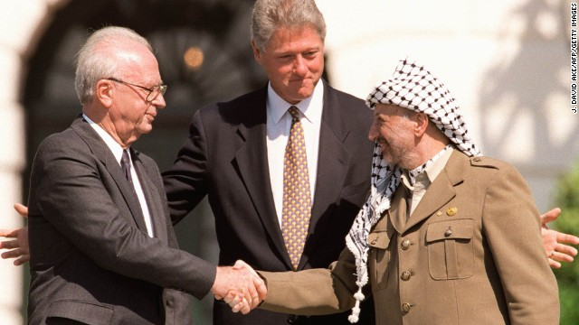
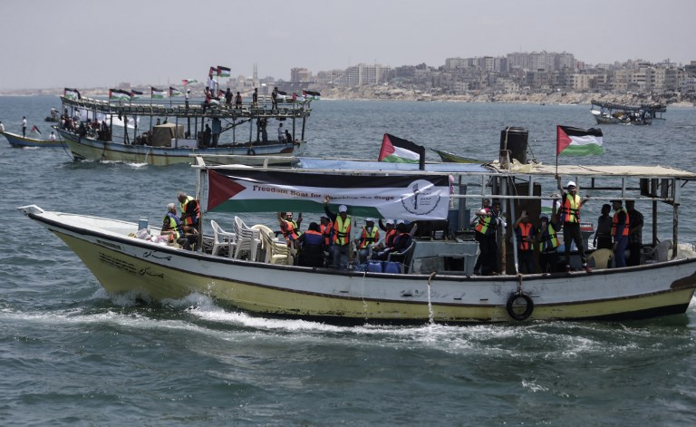

In 1947, the UN Partition Plan proposed a split between Jewish and Arab nations. However, the League of Arab Nations rejected this proposal, Israel declared nation state and independence in 1948, and thus began the 1948 Arab - Israeli war. This led to the Nakba, or the expulsion of Palestinians from land which Israel won in the war. These Palestinians are designated refugees, and the UN has maintained their right to return to their property. After the war, a 1949 Armistice Line was established. Egypt held control of Gaza and Jordan annexed the West Bank. The six-day war in 1967 greatly defined the region of Israel and Palestine, as Israel took over the West Bank and Gaza and formally ended Jordan’s control of the West Bank and Egypt’s control of Gaza. This previously defined 1949 Armistice Line became the “Green Line” and what is now recognized as the borders of the Palestinian Territories.
Bill Clinton in addition to the EU, UN, Russia, and Arab League brokered a series of agreements between Yitzhak Rabin and Yasser Arafat called the Oslo Accords. These happened in two parts: solely between Clinton, Rabin, and Arafat in 1993, and brokered by multiple parties in 1995. The 1993 Oslo Accords also formally marked the conclusion of the First Intifada, a Palestinian uprising against Israel. While the Accords did not designate a state to Palestine, it gave the Palestinian Authority some administrative ontrol over the West Bank and Gaza and was seen by many a significant achievement in the peace process. It was in the Oslo Accords that Areas A, B, and C were designated in the West Bank and the militarized zone and Israeli settlements in Gaza. Area A is entirely under the control of Palestinians, while Area B is jointly controlled by Israel and Palestinians, and Area C is entirely under Israel security control. Oslo 2 also marked the beginning of the construction of the barrier fence between Israel and Gaza, although not meant to serve as a legal border. In the map displayed, Areas A and B are shown in brown, while Area C is in blue. The disparate nature of Areas A and B in the West Bank make it difficult for Palestinians to travel freely throughout this region. While a small portion of Area C is shown in Gaza, this has been evacuated since 2005, as discussed next.
In 2005, Israel unilaterally withdrew from the Gaza Strip. Prior to this disengagement, there were approximately 8,000 Israelis occupying 21 settlements within Gaza. In an agreement between Israelis and Palestinians, the Israeli settlements were razed after the removal of settlers. While this left areas of the densely populated territory open for expansion, most Palestinians did not move into this area, in part because of lack of resources to rebuild. Gaza’s economic situation changed rapidly with the 2006 Palestinian elections where Hamas was elected in the majority. Hamas ultimately pushed out Fatah, the other major Palestinian political party, and took complete control of Gaza in 2007, effectively politically splitting Gaza from the West Bank.
Because of Hamas’ terrorist status, Egypt and Israel imposed a blockade on Gaza via land, air, and ocean, citing security concerns. While Israel continues to directly occupy the West Bank via settlements and military presence, Israel’s blockade of Gaza is considered an indirect occupation of Gaza. As such, both the West Bank and Gaza are considered the occupied Palestinian territories within international literature. In Gaza, the Green Line transitioned into am effective border with a security fence and later a wall. This border barrier is a physical restriction on land travel with a buffer zone inside of Gaza parallel to the border where Gazans are restricted from entering. In parts, this barrier is now a wall extending deep into the ground to prevent tunneling by Palestinians attempting to develop a black market system of gathering resources restricted by Israel. Border crossings along this barrier have been closed through the blockade and at various points of conflict prior to the blockade. Currently, there are two crossings open: Erez in the north, which allows humanitarian aid workers, some Palestinian workers, and others with medical emergencies to cross, and Kerem Shalom in the south. Kerem Shalom permits the transfer of a limited number of goods into Gaza. This blockade has restricted exports from Gaza, severely stinting economic growth and restricting the import of materials that could be used to help repair damaged infrastructure from acute violence events by the Israeli Defense Force (IDF).
